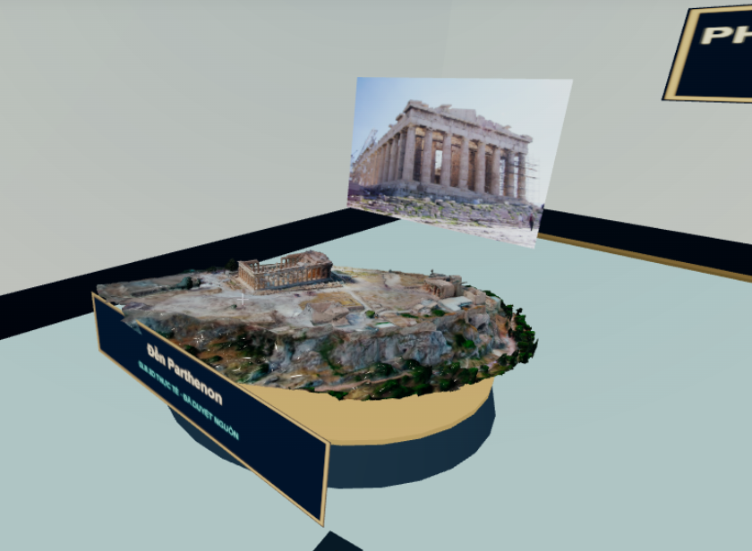

TRƯỚC · R99 — Bục Parthenon đã có

Phòng có mô hình quang trắc Parthenon nhưng các bệ kỳ quan khác chưa có trong danh mục kiến trúc mới 2007.
BÊN TRÁI: ảnh thực cô cung cấp từ R99. BÊN PHẢI: sơ đồ bố trí kỹ thuật của R100, không phải ảnh chụp WebGL đã nghiệm thu. Nhấn một bục trong sơ đồ để xem nguồn Sketchfab tương ứng.

Phòng có mô hình quang trắc Parthenon nhưng các bệ kỳ quan khác chưa có trong danh mục kiến trúc mới 2007.